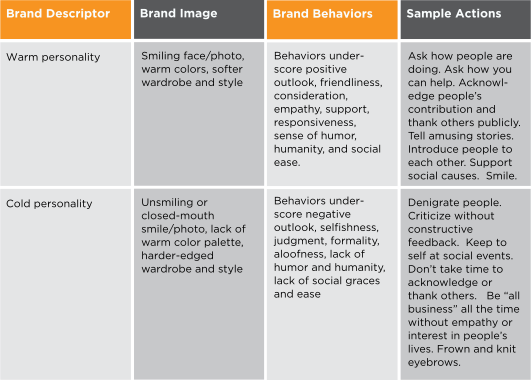
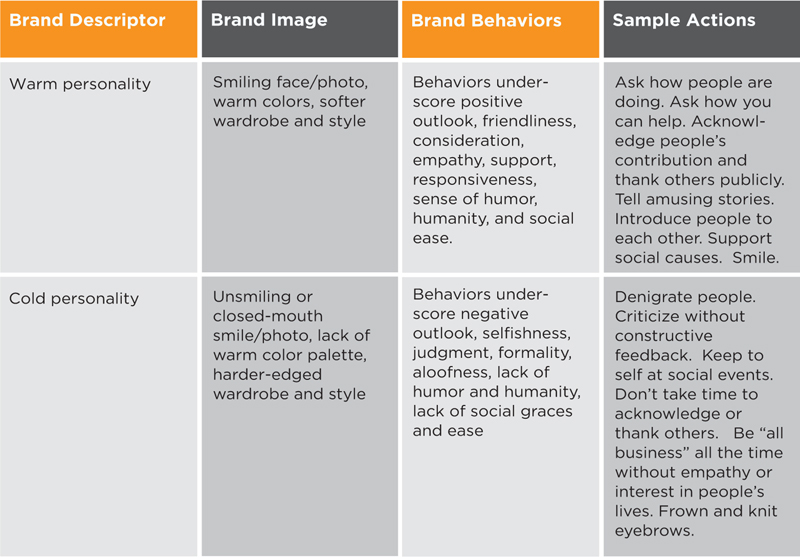

A completed brand strategy platform is a lot to comprehend. Using the template in Figure 4.9, boil your brand strategy down to three or four key brand descriptors. Without having to reference your entire brand strategy platform, your key brand descriptors will help you to align your behaviors and image with your brand. Refer to them daily to stay “on brand.”
As you choose these few brand descriptors, imagine listening in on someone describing who you are and why you would make a good hire, partner or investment (in Hillary’s case, a good City Council member).
Hillary’s Key Brand Descriptors:
As Hillary’s example above demonstrates, key brand descriptors should include a combination of cake and icing.
Lead with your cake, because this is the foundation of your brand value. A general formula for key brand descriptors for professionals is ⅔ cake to ⅓ icing.
Figure 4.9
Your Key Brand Descriptors
| 1. | (Cake) |
| 2. | (Cake) |
| 3. | (Icing) |
The Importance of Icing
Sway, The Irresistible Pull of Irrational Behavior, is a provocative book that makes a powerful argument about how we often disregard logic and act irrationally based on our biases or emotions. The authors show how using “warm” versus “cold” as a descriptor in a bio of a substitute college instructor made all the difference in how students rated the teacher at the end of class. The half of the class that read the bio that said the teacher was “warm” described the teacher after class as “good natured, considerate of others, informal, sociable, popular, humorous, and humane.”1 The half of the class that read the bio that said the teacher was “cold” described him later as “self-centered, formal, unsociable, unpopular, irritable, humorless, and ruthless.”2
As authors Ori Brafman and Rom Brafman put it:
… a single word has the power to alter our whole perception of another person—and possibly sour the relationship before it even begins. When we hear a description of someone, no matter how brief, it inevitably shapes our experience of that person.3
What does this mean for personal branding?
We discussed how cake is your rational positioning or value and how icing is your emotional connection or irrational value. Therefore, if the arguments in Sway are true, then icing is extremely important to how people perceive us and may bias people against us in spite of the rational evidence of our value. Let’s keep it simple and examine two brand descriptors, “warm” and “cold,” and how they might be represented in brand images and behaviors.
Figure 4.10
The Importance of Icing
 
The chart represents a fairly stark contrast between personalities that are perceived as warm versus cold. I realize that some people may be labeled as “cold” or “aloof” when in actuality they are just extremely shy. Many of us are born shy. Believe it or not, I was shy when I was younger, but I took steps to get over my shyness by thrusting myself into activities that required that I be more outgoing such as being a cheerleader, an actor in school plays, a member of the speech squad and a singer in choir and select groups, and taking on leadership roles in various volunteer organizations. As an adult, there are myriad opportunities to be a leader, a presenter, a host, a networker—all of which will help to build your confidence in interacting with and influencing other people. Get over being shy and increase the warmth that your personality generates. You will be rewarded with a more likable and well-regarded brand. Remember, humans are irrational beings, so never underestimate the importance of icing.